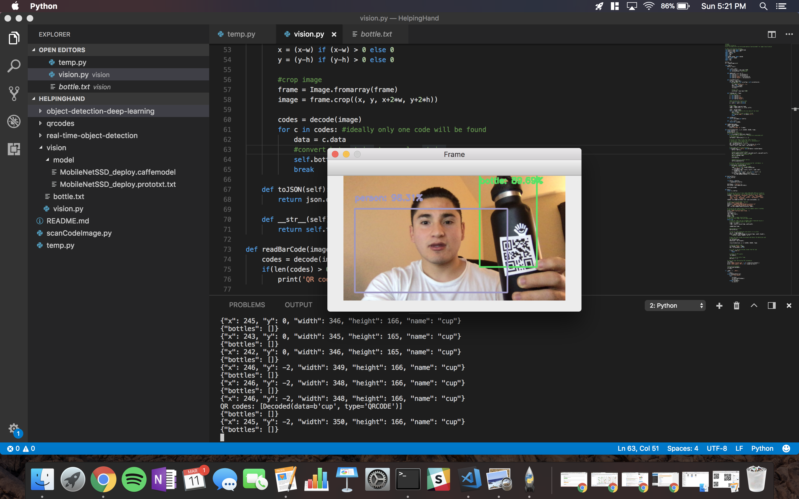
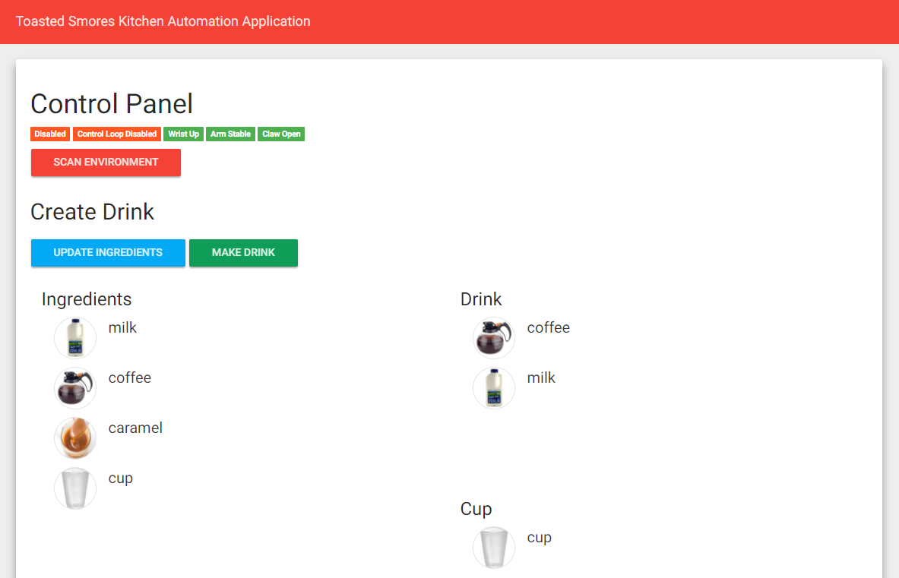
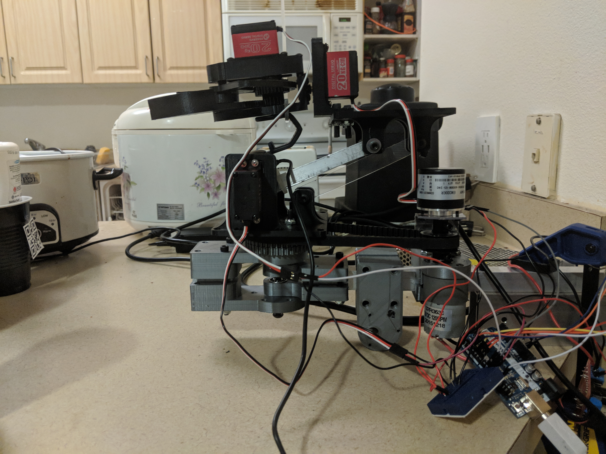
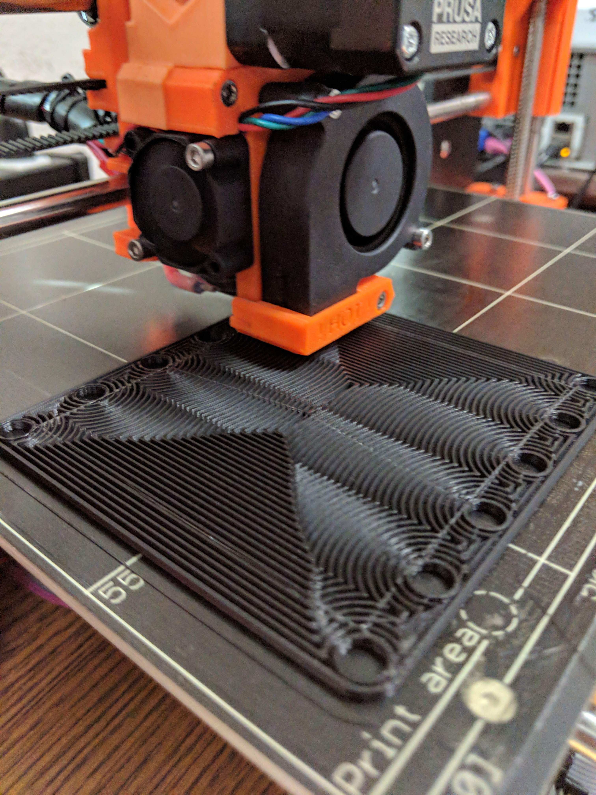
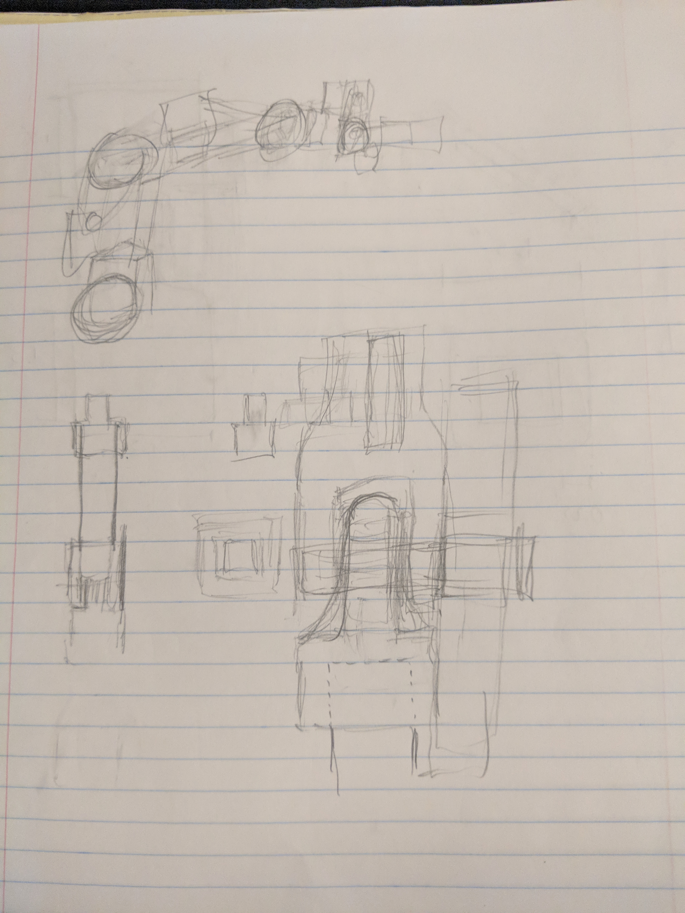

Helping Hand - General Purpose Kitchen Aide
Vision
Description
The vision aspect of the project was implemented by using Python with OpenCV. Image classification was accomplished by using a pretrained machine learning model called MobileNet. The MobileNet model leveraged the ideal balance between accuracy and performance. Once the vision module identified an bottle object classification, it would perform a search around the surrounding bounding box in order to search for a QR code. It would search for a QR code to determine what kind of bottle it was.Workflow
- Detect and Classify Objects
- Find the Position for a Bottle
- Read the QR Code on the Bottle
- Determine the Contents of the Bottle

Sample training detection
User Interface
Description
This user interface was designed to help us test the robot as well as provide a user friendly experience. To do this, we split up communication to and from the interface into two sections: data and commands. Data dealt with updating the user. These packets could be in the form of a JSON payload with robot states or the location of all identified items. Command packets are generated by the interface to make an action be triggered. This includes scanning or launching a sequence.This entire UI was made in a pure HTML and JavaScript front end and Python back end, written from scratch. We kept the back end in pure Python 3 because the rest of the vision software and robot control software was written in Python. This allowed us to facilitate the merging of different parts and allowed the entire system to communicate properly.

Control Panel With Test Ingredients
Robot
Description
Building the robot was one of the most difficult parts of the project. We went through many different iterations, trying to optimize cost and power. In the end, we went with using one brushed DC motor to control the rotational base, along with 3 other servos to control tilt, the claw, and the extension arm. An interesting feature about the robot is that the arm is a 4 - bar linkage. The linkage consists of parallel bars that allow the claw to be parallel to the base at any orientation.

Robot

3D Printing Wrist Base

Linkage From Original Design

Linkage Concept Sketches
Control System
Description
Designing a control system to allow our robot to reliable and precisely execute our movements was a big challenge. Our base is a closed loop control system, we set what angle we want to go through and a PID loop becomes active to correct course and position and will fight external stimuli to preserve position.An additional problem we faced was how we were going to have the arm find objects in the environment. For the sake of this project, we determined that pre-scanning the environment would be the most efficient. At each angle we went to, we would generate a consensus of what we were seeing by repeatedly sampling and using the machine learning image classifier to tell us what it thought we saw. After this, for any item we saw in the world, we performed a calculation to find what angle would lead us closest to the center of mass of the object. We would find how the center of each object was from the center of the frame at each angle, then find what minor adjustments we had to perform to get to the center. This ended up working well.